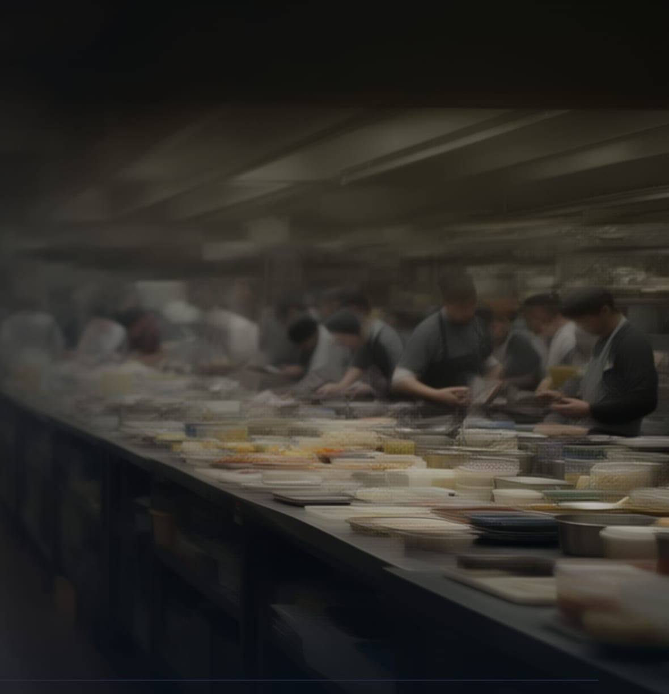
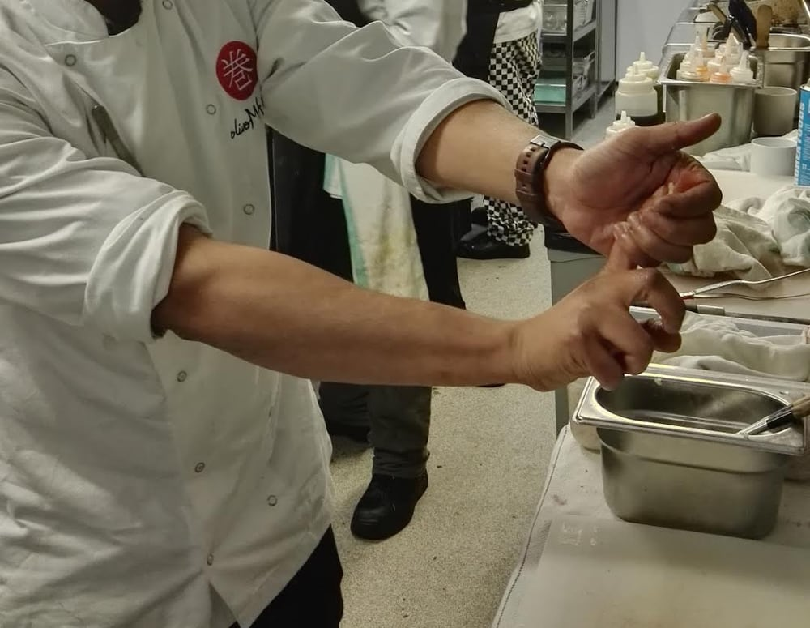

A chef trained in the UK inspection system walks your kitchen unannounced, against 63 written controls. You get the serious findings out loud the same day, a report in 72 hours, and a 30-day plan.
Not an FSSAI-recognised audit · Not a certification · No inspection relief

The line, mid-serviceEnforcement arrives unannounced — that is the point of it. So the honest question is not are the records in order? It is would you survive an inspection this Tuesday, mid-service, with the fridge you have been meaning to fix?
Most kitchens genuinely do not know where they stand. Not because anyone is careless — because nobody has walked the room with a written standard in hand and said so. The chef is too close to it, the owner is looking at the P&L, and the first person to look properly is usually holding a notice pad.
You agree a window — a fortnight, say — and we arrive inside it without telling you when. A scheduled review measures how well you tidy up. An unannounced one measures how you actually run.
In that order, because the failures live in the joins between sections.
Engagement letter and photo ID. No one to authorise the visit? We wait or come back.
All ten stages above, against the written control set.
Temperatures taken into food, not read off a door. A probe reading three degrees warm means months of records written in good faith and wrong.
Temperature logs, cleaning, pest, water test, licence, training, oil disposal. We look for gaps — and for the too-perfect.
Not a test, and nobody is reported for an answer. It tells us whether the system lives in your people or only on paper.
Anything critical is said out loud, on the day. Nothing urgent waits for a document.
The one thing we reserve is the right to end the engagement if something critical is found and simply left. We are not inspectors and we will not report you to anyone — but we will not stay on as the name attached to a kitchen that has decided to ignore us.
In the UK every kitchen's hygiene rating is published for anyone to read, and a rating of 5 is scored partly on how much confidence an inspector has in the people running it. That is the system he came up in.

Abhishek Bose
Chef · eleven years on the line
| When | Kitchen | Role | What it taught |
|---|---|---|---|
| 2012 | Yo! Sushi, Nottingham | Chef | Hygiene as a written system rather than a habit. FSA register |
| to 2014 | Turtle Bay, Nottingham | Chef de partie | Held responsibility for the due diligence records. FSA register |
| 2014 | Chino Latino at Park Plaza, Nottingham | Senior chef de partie | Audited by a hotel group's own internal team, to their standard. FSA register |
| 2015 | Oliver Maki concept, Kuwait | Concept development | Wrote the process architecture from nothing — storage, temperature control, cleaning, records — to the UK standard, under a different rulebook. |
| 2016 | Oliver Maki, Dean Street, London | Senior sous chef | Then ran the system he had written. First name on that kitchen's payroll. |
| 2017 | Uni, Belgravia, London | Senior sous chef | High-volume events and canapé service against a live allergen matrix. |
Also Wagamama and All Bar One in Nottingham between 2012 and 2014, and The Montague on the Gardens in London before that.
A consultant's number that quietly becomes “an FSSAI requirement” because it once appeared in a report is how people get misled without anyone deciding to mislead them. So every control we check carries its own source.
Each control has a limit you can measure, a frequency, and a corrective action.
| Area | What we measure there |
|---|---|
| Receiving | Delivery temperatures, vehicle and packaging condition, date coding, supplier records, what gets rejected |
| Chilled & frozen storage | Unit temperatures probed into food, stock rotation, covering and labelling, defrost condition, separation of raw and ready-to-eat |
| Dry store | Off-floor storage, decanting and labelling, open-pack control, date marking, condition of the room itself |
| Cooking | Core temperatures taken and recorded, probe use at the point of cooking, what happens when a check fails |
| Hot holding | Holding temperatures, time limits, monitoring frequency, the rule for food that falls out of limit |
| Cooling | How fast cooked food comes down, method used, where it is placed, what is recorded |
| Cross-contamination | Separation in storage and prep, board and cloth control, handwashing points, sequence of work on shared surfaces |
| Allergens | Accurate information at the point of order, storage and prep separation, staff knowledge, how a substitution is handled |
| People | Fitness to work, hand hygiene in practice, protective clothing, training records that match who is actually on shift |
| Pests | Proofing, evidence of activity, bait and monitoring points, contractor reports and whether the actions were closed out |
| Water | Source, storage tank condition and cleaning, potability testing and the date of the last test |
| Ice | Machine condition and cleaning, scoop storage, handling between machine and glass |
| Cleaning | Schedule against reality, chemical suitability and dilution, contact times, who signs and whether it was done |
| Waste & oil | Internal bins, external storage, collection frequency, used-oil disposal and its paper trail |
| Records & the building | Thirty days of logs, licence currency, probe calibration, plus floors, drains, lighting, ventilation and surfaces |
One conversation, a fixed number, no hourly meter running while someone walks around your kitchen. What moves it inside the range is the size of the operation and how much there is to look at.
₹10,000 – 25,000
Per location · inclusive of 18% GST
Before you book: the 50% booking deposit is non-refundable — it reserves a working day and the travel with it. One reschedule is free if you tell us before the window opens. If we cancel or cannot attend, the deposit is refunded in full. Full detail in the service terms & cancellation.
Twenty minutes. You describe the operation — covers, kitchens, how many people handle food — and you get a fixed quote and a window. No visit is booked on that call unless you want one.
Kolkata and surrounding districts · Elsewhere in India by arrangement